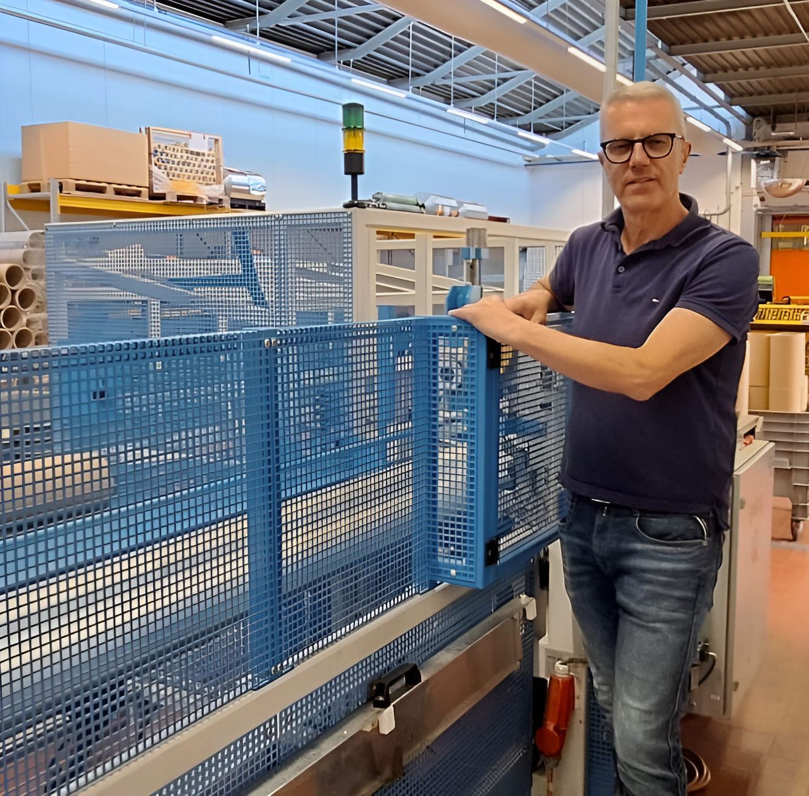
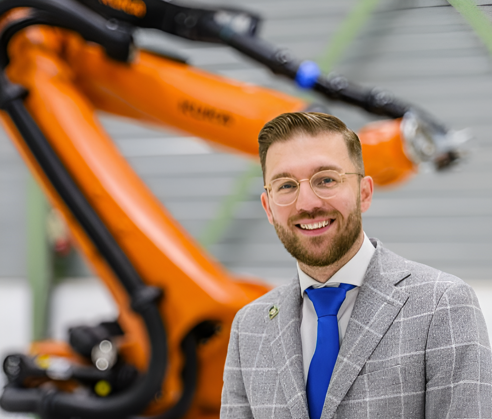

Wij zijn een hecht team van ervaren engineers en technici met jarenlange ervaring in de machinebouw en het onderhouden en repareren van machines. Wij zijn afkomstig van EME Engel Machinefabriek en Engineering waar wij onze sporen in de afgelopen decennia ruim verdiend hebben. Als groep (senior mechanical engineers, field service technici, service technici, draaiers, frezers) zijn we overgestapt naar QSI Machine & Apparatenbouw.
QSI Machine & Apparatenbouw is onderdeel van BBG Holding, waar ook Bosma & Bronkhorst onderdeel van is. Bosma & Bronkhorst was onze vaste elektrotechnische partner in het bouwen, modificeren, uitbreiden en retrofitten van machines. Het aandeel van Bosma & Bronkhorst was het ontwerpen, bouwen en aansluiten van de elektrotechnische aandrijf- en besturingspanelen (motion control technologie) van de machines.
Met het samengaan en de goede samenwerking tussen de engineers en technici van QSI en B&B (onder hetzelfde dak)
Marc Wijnberg, bedrijfsleider QSI
Uitbreiding met machinebouw aan de activiteiten van Bosma & Bronkhorst was voor ons een logische vervolgstap. We zijn actief in diverse segmenten van de elektrotechniek met o.a. specialisaties in aandrijfsystemen en automatisering. We hebben in de afgelopen decennia in de machinebouw veel expertise en ervaring opgebouwd. Er waren al plannen om naast de elektrotechniek een machinebouwtak op te starten om onze klanten op het gebied van hun machinepark volledig te kunnen ontzorgen.
Toen we hoorden dat de vestiging van EME Engel in Zaandam ging sluiten en de medewerkers niet wilden verhuizen naar de hoofdvestiging van de nieuwe eigenaar, was dit voor ons een uitgelezen kans. Omdat we al zo’n 30 jaar samenwerkten waren de mensen geen vreemden voor ons, wisten we waar ze toe in staat waren en dat ze hetzelfde DNA hadden, namelijk kwaliteit, klantgerichtheid, betrouwbaarheid en passie voor techniek. De overgang van de medewerkers was daardoor snel een feit.
Nick Bronkhorst, Directeur Bosma & Bronkhorst
